We strive hard to provide the best features for you!
Itemized Transactions
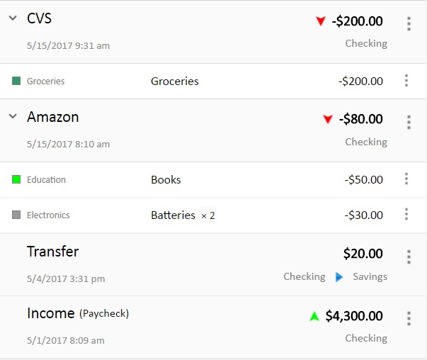
Organic Budget is the only budgeting system that allows you to break your transactions into items. This allows you to track your spending item wise as well as category wise.
There are three kinds of transactions you can work with: spending, income, and transfer transactions.
For a spending transaction, you can add items as well as quantities of items.
When you add a transaction, you specify which bank account(s) it is related to.
You can easily manage (add, edit, and delete) transactions.
Transaction Overview
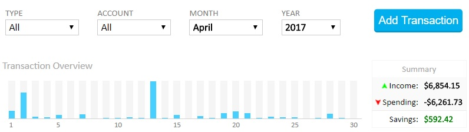
With transactions overview, you can see a graphical overview of your transactions at a glance. You can click on a bar to see a summary of the transactions made on that day.
You can also see a quick summary of your income and spending in a selected month.
Spending Insights
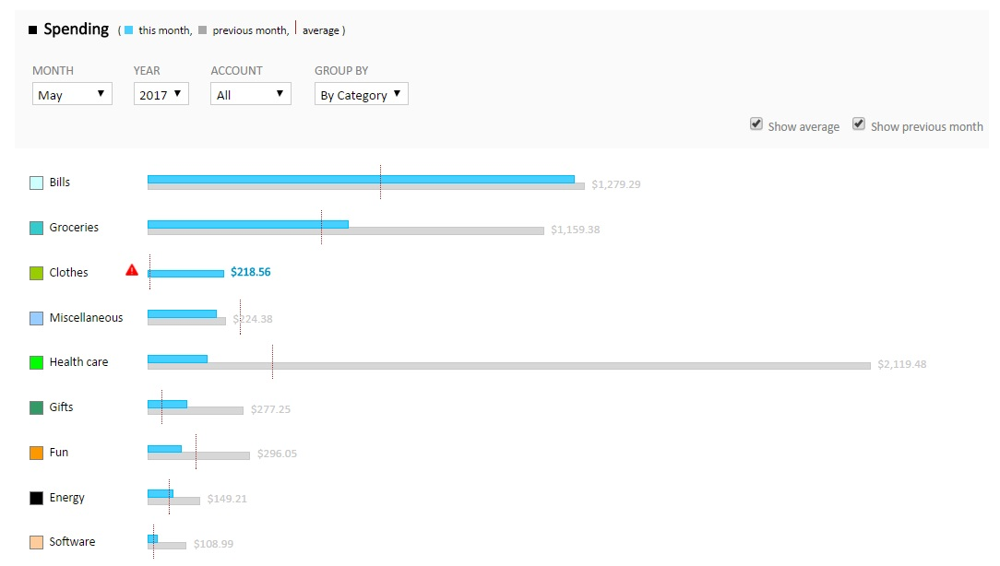
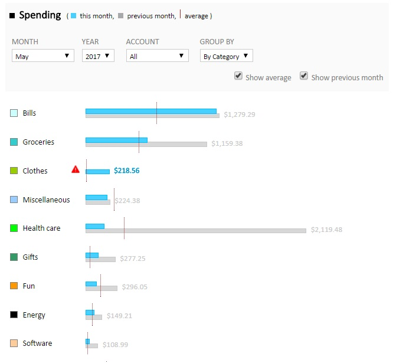
Use spending insights filters to look at different periods of times, accounts, and to see your spending by category, payee, or item name.
The chart helps you look at your spending visually. You can compare it with previous month's spending as well as the average spending. Some categories have a warning icon next to them which means you spent more than the previous month and the average. Others have a green leaf next to them which means you spent less than the previous month and the average.
Total Spending Insights
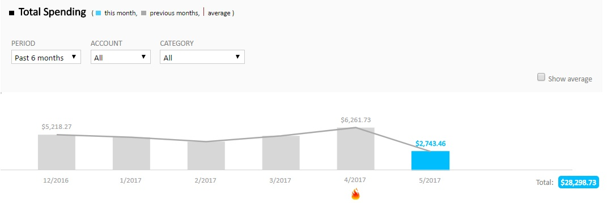
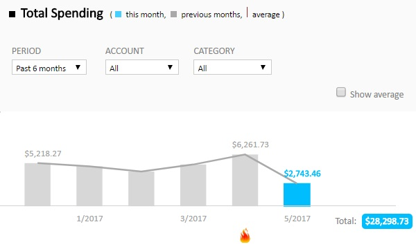
Use total spending insights filters to look at different periods of times, accounts, and categories. The flame icon means you spent the most in that month.
The chart helps you look at your spending visually across a period of time.
Budget Tracking Insights
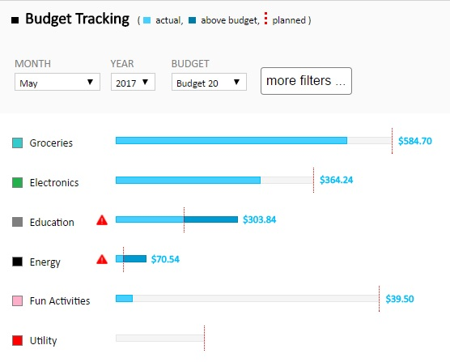
Use budget tracking insights filters to look at different periods of times, accounts, and scales.
The chart helps you look track your budget visually in a specific month.
Income vs Spending Insights
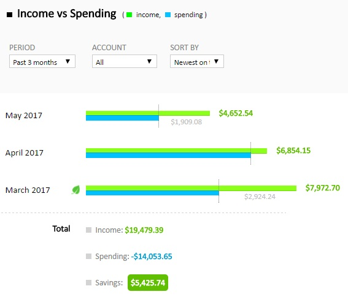
Use income vs spending insights filters to look at different periods of times and accounts, and to sort the results.
The chart helps you compare monthly income and savings.
Budgets
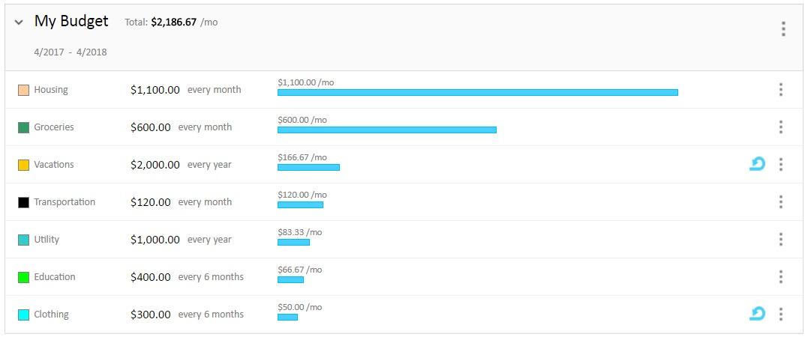
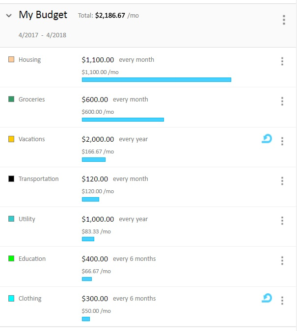
With Organic Budget, you can define your budget in a very flexible way. You can define your targets based on how much you want to spend on different categories. Targets can be defined in different currencies based on the accounts you have.
The budget targets can be defined on a yearly basis, monthly basis, etc.
You cans set a target to rollover, which means if you don't spend all your budget this cycle, the leftover will be transfered to the next cycle. Further, if you overspend this cycle, the overspending will be deducted from the next cycle.
Categories
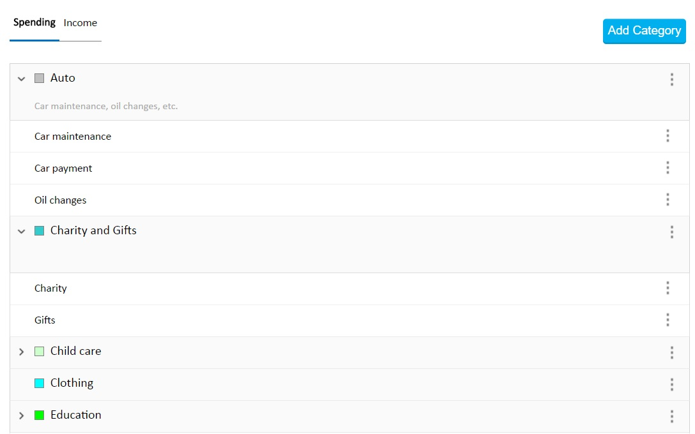
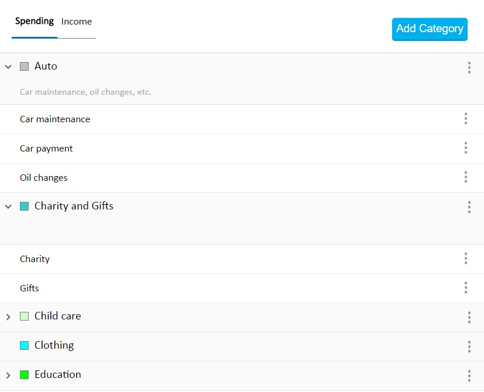
With Organic Budget, you can create spending and income categories that help you organize and analyze your spending and income
Further, a category can be broken into items that can give you a rich understanding of your spending and income.
Accounts
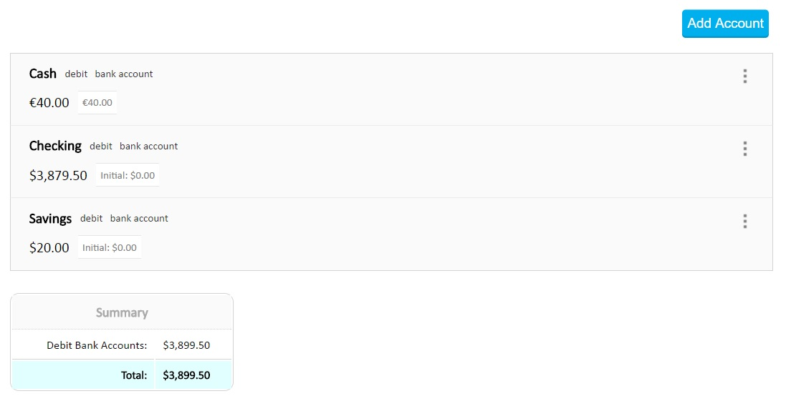
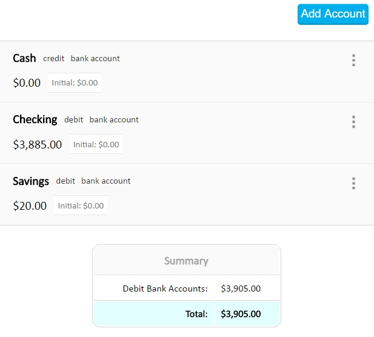
With Organic Budget, you can create different kinds of accounts such as bank accounts and cash accounts. Some accounts can be debit or credit accounts.
Further, an account can be defined in its own currency. Organic Budget supports more than 30 different currencies.
 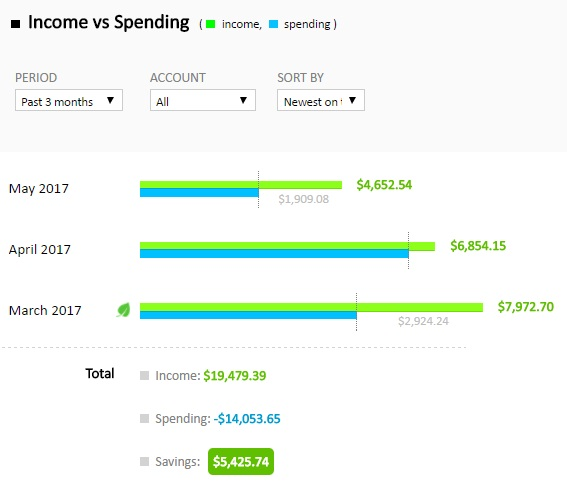
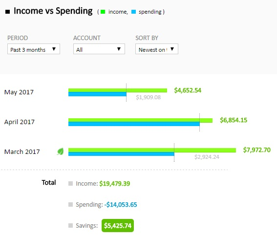